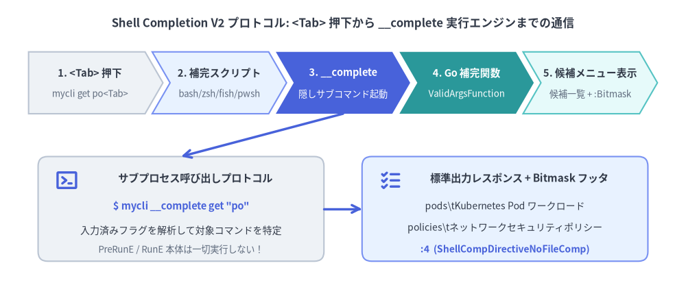
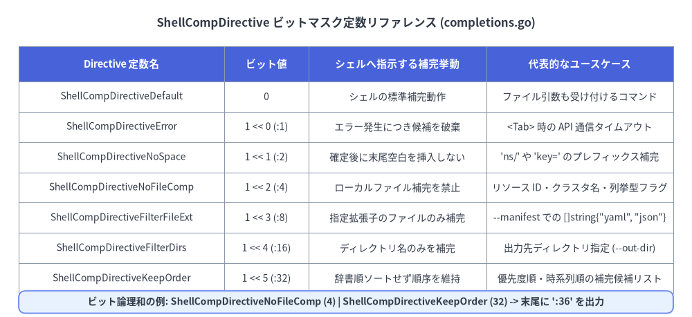

Shell Completion V2 と Directive 制御
Cobra の Shell Completion V2 エンジン（completions.go）は、Go 製 CLI における <Tab> 自動補完の実装体験を根本から刷新しました。開発者がシェルごとの複雑なスクリプト（Bash / Zsh 等）を手書きする必要はなく、Go コードで記述した補完関数がバイナリ内部の隠しコマンド（__complete および __completeNoDesc）を介して Bash・Zsh・Fish・PowerShell の全4シェルで共通動作します。

Source Code
from drawlib.canvas import save, setup
from drawlib.icons import phosphor
from drawlib.lines import line
from drawlib.shapes import rectangle
from drawlib.smartarts import ChevronProcess
from drawlib.styles import Styles
from drawlib.text import text
setup(width=144, height=60)
text(
(72, 55),
"Shell Completion V2 プロトコル: <Tab> 押下から __complete 実行エンジンまでの通信",
style=Styles.DarkBold.patch(text_size=12.0),
)
flow = ChevronProcess(
style=Styles.Neutral,
text_style=Styles.DarkBold.patch(text_size=10.5),
description_style=Styles.Muted.patch(text_size=9.5),
corner_angle=60.0,
spacing=1.5,
flat_left_end=True,
)
flow.add("1. <Tab> 押下", description="mycli get po<Tab>")
flow.add("2. 補完スクリプト", description="bash/zsh/fish/pwsh", style=Styles.PrimaryNeutral)
flow.add(
"3. __complete",
description="隠しサブコマンド起動",
style=Styles.PrimaryFlat,
text_style=Styles.WhiteBold.patch(text_size=10.5),
description_style=Styles.White.patch(text_size=9.5),
)
flow.add(
"4. Go 補完関数",
description="ValidArgsFunction",
style=Styles.SecondaryFlat,
text_style=Styles.WhiteBold.patch(text_size=10.5),
description_style=Styles.White.patch(text_size=9.5),
)
flow.add("5. 候補メニュー表示", description="候補一覧 + :Bitmask", style=Styles.SecondaryNeutral)
flow.draw(xy=(6, 36), width=132, height=13)
# Bottom Left: Wire Request
rectangle((38, 16), width=60, height=22, style=Styles.Neutral.patch(shape_r=2.0))
phosphor.terminal_window((14, 22), width=5.0, style=Styles.PrimaryBold)
text((41, 22.5), "サブプロセス呼び出しプロトコル", style=Styles.DarkBold.patch(text_size=11.0))
text((38, 16.5), "$ mycli __complete get \"po\"", style=Styles.PrimaryBold.patch(text_size=10.5))
text((38, 11.5), "入力済みフラグを解析して対象コマンドを特定", style=Styles.Dark.patch(text_size=10.0))
text((38, 7.5), "PreRunE / RunE 本体は一切実行しない！", style=Styles.Muted.patch(text_size=9.5))
# Bottom Right: Wire Response
rectangle((106, 16), width=60, height=22, style=Styles.PrimaryNeutral.patch(shape_r=2.0))
phosphor.list_checks((82, 22), width=5.0, style=Styles.PrimaryBold)
text((109, 22.5), "標準出力レスポンス + Bitmask フッタ", style=Styles.DarkBold.patch(text_size=11.0))
text((106, 16.5), "pods\\tKubernetes Pod ワークロード", style=Styles.Dark.patch(text_size=10.0))
text((106, 12.0), "policies\\tネットワークセキュリティポリシー", style=Styles.Dark.patch(text_size=10.0))
text((106, 7.5), ":4 (ShellCompDirectiveNoFileComp)", style=Styles.PrimaryBold.patch(text_size=10.0))
line((72, 36), (38, 27), arrow_head="->", style=Styles.PrimaryBold)
line((68, 16), (76, 16), arrow_head="->", style=Styles.PrimaryBold)
save()
1. 静的補完と動的 Go 補完の実装パターン
Cobra は固定リストの宣言から API 連携による動的補完まで、用途に応じた段階的な API を提供しています。
1. 静的な位置引数補完（ValidArgs と ArgAliases）
位置引数の候補があらかじめ決まっている場合は、cobra.CompletionWithDesc(choice, description)（内部的には "候補\t説明文" 形式の文字列）を ValidArgs に登録します。
cmd := &cobra.Command{
Use: "get <resource-type>",
Short: "クラスタリソースの一覧を表示します",
ValidArgs: []cobra.Completion{
cobra.CompletionWithDesc("pods", "Pod ワークロードインスタンス"),
cobra.CompletionWithDesc("services", "ClusterIP / LoadBalancer サービス"),
cobra.CompletionWithDesc("deployments", "宣言的 ReplicaSet コントローラ"),
},
// ArgAliases は toComplete に一致する ValidArgs が 0 件のときのみ補完候補に出る
ArgAliases: []string{"po", "svc", "deploy"},
Args: cobra.MatchAll(cobra.ExactArgs(1), cobra.OnlyValidArgs),
}
2. 組み込みヘルパー関数（FixedCompletions / NoFileCompletions）
completions.go:151-164 には、そのままコールバックとして渡せる2つの高階関数が用意されています。
cobra.NoFileCompletions: ファイルパスを受け取らないコマンドやフラグで、シェルのデフォルト動作であるローカルファイル名補完を抑制します（ValidArgsFunction: cobra.NoFileCompletions）。cobra.FixedCompletions(choices, directive): 固定の候補スライスと任意のShellCompDirectiveを返すCompletionFuncクロージャを生成します。
3. 動的な位置引数補完（ValidArgsFunction）
稼働中の Kubernetes Pod 名や Git ブランチ名など、実行時の状態や直前の引数（args）・フラグに応じて候補を動的に取得したい場合は ValidArgsFunction を実装します。
cmd.ValidArgsFunction = func(
cmd *cobra.Command,
args []string,
toComplete string,
) ([]cobra.Completion, cobra.ShellCompDirective) {
// 第1引数がすでに入力済みの場合はこれ以上補完しない
if len(args) >= 1 {
return nil, cobra.ShellCompDirectiveNoFileComp
}
// <Tab> 押下時点で入力済みの --namespace フラグ値を読み取って API 検索に利用できる！
ns, _ := cmd.Flags().GetString("namespace")
pods, err := fetchLivePodNames(cmd.Context(), ns, toComplete)
if err != nil {
cobra.CompErrorln(err.Error())
return nil, cobra.ShellCompDirectiveError
}
return pods, cobra.ShellCompDirectiveNoFileComp
}
4. フラグ値の動的・静的補完（RegisterFlagCompletionFunc）
ローカルフラグや Persistent フラグの値に対する補完は cmd.RegisterFlagCompletionFunc(flagName, fn) で登録します（内部では flagCompletionMutex によってスレッドセーフに管理されます）。
cmd.Flags().StringP("output", "o", "table", "出力フォーマット")
_ = cmd.RegisterFlagCompletionFunc(
"output",
cobra.FixedCompletions(
[]cobra.Completion{
cobra.CompletionWithDesc("json", "機械可読な JSON 形式"),
cobra.CompletionWithDesc("yaml", "宣言的な YAML マニフェスト形式"),
cobra.CompletionWithDesc("table", "人間が読みやすい ASCII テーブル形式"),
},
cobra.ShellCompDirectiveNoFileComp|cobra.ShellCompDirectiveKeepOrder,
),
)
2. ShellCompDirective ビットマスク完全リファレンス
すべての補完関数は第2戻り値として cobra.ShellCompDirective ビットマスク（completions.go:56-96）を返します。複数のフラグはビット論理和（|）で組み合わせることが可能です。

Source Code
from drawlib.canvas import save, setup
from drawlib.shapes import rectangle
from drawlib.smartarts import Table
from drawlib.styles import Styles
from drawlib.text import text
setup(width=148, height=68)
text(
(74, 63),
"ShellCompDirective ビットマスク定数リファレンス (completions.go)",
style=Styles.DarkBold.patch(text_size=12.0),
)
tbl = Table(
cell_style=Styles.White,
text_style=Styles.Dark.patch(text_size=10.0),
header_cell_style=Styles.PrimaryFlat,
header_text_style=Styles.WhiteBold.patch(text_size=10.5),
border_style=Styles.MutedThin,
)
rows = [
["Directive 定数名", "ビット値", "シェルへ指示する補完挙動", "代表的なユースケース"],
[
"ShellCompDirectiveDefault",
"0",
"シェルの標準補完動作",
"ファイル引数も受け付けるコマンド",
],
[
"ShellCompDirectiveError",
"1 << 0 (:1)",
"エラー発生につき候補を破棄",
"<Tab> 時の API 通信タイムアウト",
],
[
"ShellCompDirectiveNoSpace",
"1 << 1 (:2)",
"確定後に末尾空白を挿入しない",
"'ns/' や 'key=' のプレフィックス補完",
],
[
"ShellCompDirectiveNoFileComp",
"1 << 2 (:4)",
"ローカルファイル補完を禁止",
"リソース ID・クラスタ名・列挙型フラグ",
],
[
"ShellCompDirectiveFilterFileExt",
"1 << 3 (:8)",
"指定拡張子のファイルのみ補完",
"--manifest での []string{\"yaml\", \"json\"}",
],
[
"ShellCompDirectiveFilterDirs",
"1 << 4 (:16)",
"ディレクトリ名のみを補完",
"出力先ディレクトリ指定 (--out-dir)",
],
[
"ShellCompDirectiveKeepOrder",
"1 << 5 (:32)",
"辞書順ソートせず順序を維持",
"優先度順・時系列順の補完候補リスト",
],
]
tbl.draw_flexible(
xy=(4, 58),
column_widths=[44, 18, 38, 40],
row_heights=[7.5, 6.5, 6.5, 6.5, 6.5, 6.5, 6.5, 6.5],
data=rows,
align="top_left",
)
rectangle((74, 3.2), width=140, height=4.8, style=Styles.PrimaryNeutral.patch(shape_r=1.5))
text(
(74, 3.2),
"ビット論理和の例: ShellCompDirectiveNoFileComp (4) | ShellCompDirectiveKeepOrder (32) -> 末尾に ':36' を出力",
style=Styles.DarkBold.patch(text_size=10.0),
)
save()
3. 組み込み completion サブコマンドと __complete 通信規約
rootCmd.CompletionOptions.DisableDefaultCmd = true で無効化しない限り、サブコマンドや補完関数を持つ CLI には自動的に completion サブコマンド（bash, zsh, fish, powershell）が追加されます。
rootCmd.CompletionOptions によるカスタマイズ
rootCmd.CompletionOptions = cobra.CompletionOptions{
DisableDefaultCmd: false, // 'mycli completion <shell>' サブコマンドを自動生成
DisableNoDescFlag: true, // '--no-descriptions' フラグの露出を抑止
DisableDescriptions: false, // zsh/fish/pwsh/bash>=4 で候補横の説明文を有効化
HiddenDefaultCmd: false, // true にすると --help 一覧から completion を隠す
}
__complete によるデバッグと通信プロトコル
ユーザーが <Tab> を押すと、シェル側の補完スクリプトは隠しコマンド __complete（説明文不要時は __completeNoDesc）を引数付きで実行します。開発中はこのコマンドを直接ターミナルで叩くことで、シェルスクリプトを再読み込みせずに補完ロジックを単体テスト・デバッグできます。
# シェル設定を変更せずターミナルから直接補完プロトコルを検証する例
$ mycli __complete deploy --output ""
json 機械可読な JSON 形式
yaml 宣言的な YAML マニフェスト形式
table 人間が読みやすい ASCII テーブル形式
:36
Completion ended with directive: ShellCompDirectiveNoFileComp, ShellCompDirectiveKeepOrder
stdout（標準出力）: 最終行の:36より前の各行が補完候補（値\t説明文）、最終行の:以降の整数がShellCompDirectiveビットマスクとしてシェルスクリプトにパースされます。stderr（標準エラー出力）:Completion ended with directive: ...という診断メッセージやcobra.CompDebugln(...)のログはstderrに出力されるため、シェルスクリプトのパースを壊すことなく開発者に分かりやすいデバッグ情報を提供します（BASH_COMP_DEBUG_FILE=/tmp/comp.log環境変数を設定するとファイルへ記録されます）。